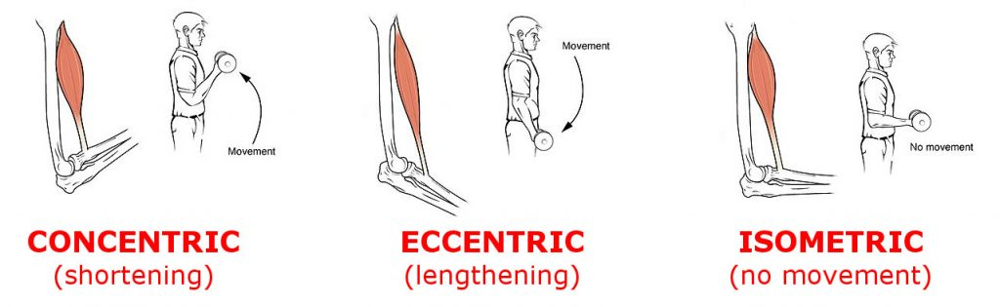
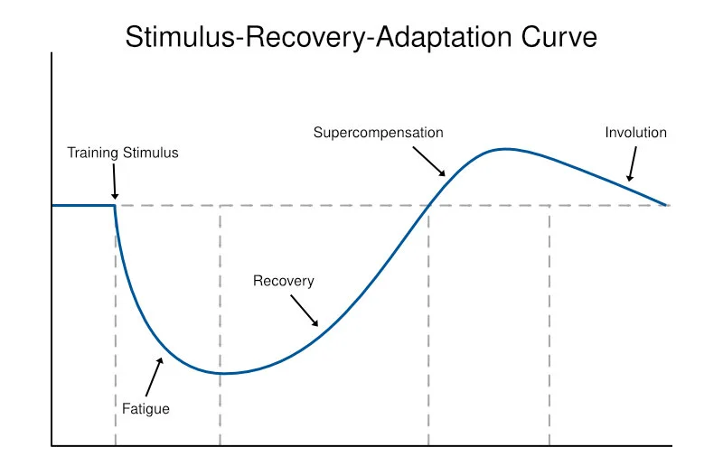

Fitness Terms
1RM - Short for 1 rep max. This is the maximum amount of weight someone can lift in a certain exercise. Strength - How much force someone can produce. Power - How fast and how much force someone can produce. Often explained as strength x speed. Muscular Hypertrophy - The increase of muscle size. VO2 Max - The maxmimum rate of oxygen consumption attainable during physical exertion. Progressive Overload - The gradual increase of workout intensity, difficulty, or length with the goal of continually stimulating adaptions in the body. SRA - An acronym standing for stimulus recovery adaptation. It describes the way that the body improves itself in response to a stimulus or exercise. Aerobic - Requiring oxygen. This term is often used to indicate activites such as long-distance running where the heart and cardiovascular system are the main source of energy. Anaerobic - Without oxygen. This term is often used to indicate activites such as sprinting where energy already stored in the muscles are the main source of energy. Concentric - The contraction or shortening of a muscle. An example of this is curling a bar upwards by contracting your biceps. Eccentric - The opposite of a concentric contraction. This refers to the muscle being lengthened. An example of this is squatting down in a controlled manner by lengthening your quadriceps. Isometric - This refers to a the conctraction of a muscle without it changing in length. An example of this is holding something in your hand.
 